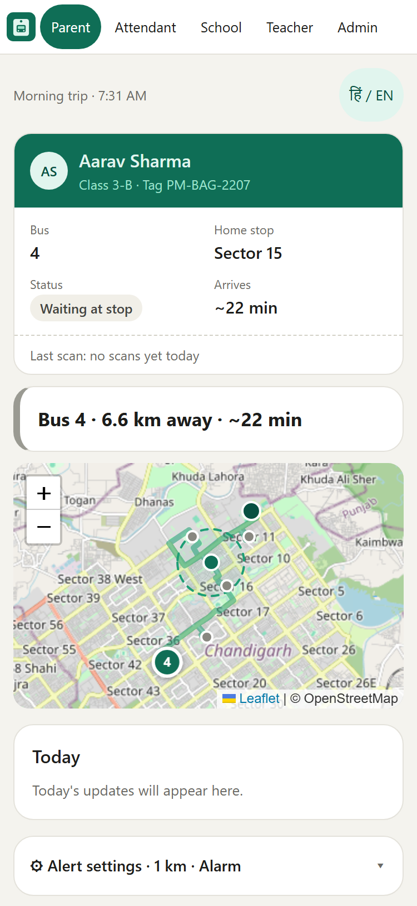
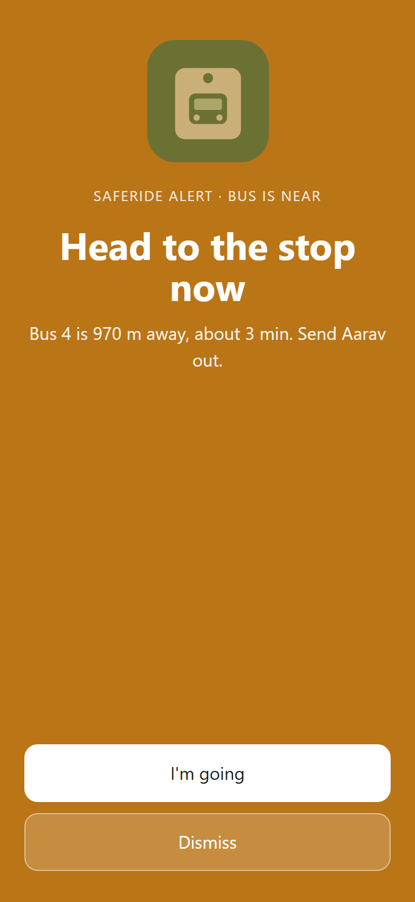
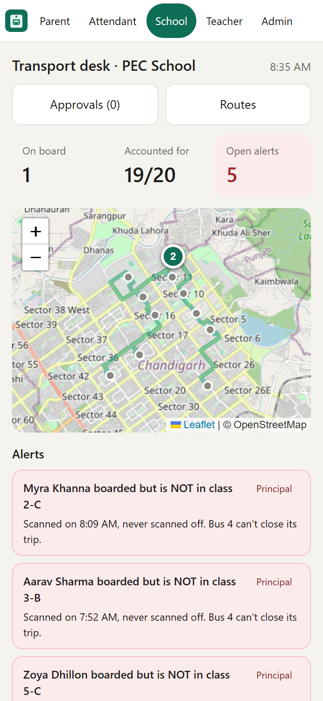
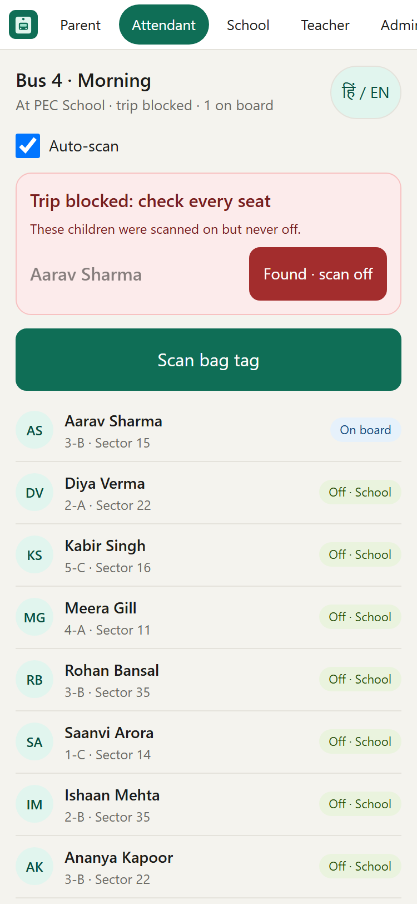

Admin (demo control) School desk Attendant · Bus 4 QR sheet (+ judge /join QR) Parent of Aarav
Tip: open this guide on your laptop next to the app. The timer at the bottom right keeps you on time and highlights the current step.
1 · Setup (10 minutes before you present)
Laptop (on the projector)
Your phone = the parent
Second phone (optional) = the attendant
Rehearse once
2 · Who holds which screen
Admin (you drive the demo) + School desk (the room watches this)
Parent of Aarav: the alarms ring here
Scan the /join QR → each gets their own child, live
/bus/4: scan bag tags, End trip, “Found”
Every screen shows the same live world (it polls every 1.5 s). The role bar at the top of every page lets one person hop between roles.
3 · The 5-minute script
Speed tip: use 2× while you talk through the map; use 4× when you just want to reach the next moment. One morning trip ≈ 35 s at 2×, ≈ 18 s at 4×.
- Show the big “Scan to join the demo” QR on
/admin/qr. - Judges scan → tap Parent → each gets a different child and a live pass card.
- Admin: Normal day · Morning · 2×, target Aarav → Start.
- On your phone point at: the pass card, the live line “Bus 4 · 2.3 km away · ~9 min”, the bus moving on real Chandigarh roads, and the dashed radius ring (open ⚙ Alert settings to show 300 m / 500 m / 1 km / 2 km with minutes).
- Bus enters 1 km → full-screen ALARM rings + vibrates: tap I'm going. Then “Arriving now”, then boarded (blue), then reached school (green).


- Admin: Reset → Left on bus · Morning · 4× → Start. Switch the projector to the School tab.
- At school the trip tries to close → BLOCKED. School desk: “Aarav boarded but is NOT in class 3-B”. Parent phone: red alarm.
- Wait a few seconds: the alert escalates Attendant → Transport in-charge → Principal.
- Attendant (/bus/4): red box “Trip blocked: check every seat” → Found · scan off (or scan Aarav's tag). Everything turns green, trip closes.


- Admin: Reset → Missed the bus · 4× → Start.
- Bus leaves Sector 15 without Aarav → parent gets a red alarm: tap “Aarav is not going today”.
- School desk attendance instantly shows “Absent, parent informed”.
- Scan a child's QR from
/admin/qrwith any phone camera → “Found this bag? Alert the parent”. Tap it: the parent is alerted, no phone number shown. - Scan a fresh tag (
PM-BAG-9001) → Register a new rider → it lands in School → Approvals → Approve → the child appears on the attendant's list.
4 · Scenario cheat-sheet
| Pick on /admin/demo | What happens | Where to look | What to tap |
|---|---|---|---|
| Normal day Morning | Radius alarm → arriving → boarded blue → reached school green | Parent phone | “I'm going” |
| Normal day Afternoon | Boarded at school → radius/arriving → dropped safely green | Parent phone | “I'm going” |
| Missed the bus (forces Morning) | Bus leaves the stop without the child → red alarm | Parent + School attendance | Parent: “not going today” / “I'll drop him” |
| Wrong stop (forces Afternoon) | Child scanned off one stop early → red alert to parent + school | School alerts | School: “Child confirmed safe” |
| Left on bus Morning or Afternoon | End trip BLOCKED → “Boarded but NOT in class” → escalates every ~3 sim-min | School + Attendant | Attendant: “Found · scan off” |
Target child: the dropdown on /admin/demo. Children claimed by judges are marked · judge: pick one to make their phone ring. Always press Reset between scenarios.
5 · One-liners for questions
No. Only the bus is located. A child is only “scanned on / off at stop X”. The change-stop pin is used for maths and never stored.
Today: in-app alarm + phone notification. Production: PingME's masked call / WhatsApp for red alerts, which work with the app closed.
Yes: OpenStreetMap, real Chandigarh sectors, and the road route from OSRM. ETA = remaining road distance ÷ the bus's measured speed.
It's a simulation for the demo: the bus position is a pure function of time on the real road. In production the attendant's phone or a GPS unit feeds it.
Transport desk: every bus, every child, alerts with escalation, approvals for new riders / stop changes, a simple route editor, a teacher view per class.
PingME already sells it: anyone scans with a normal camera, no app. The parent's number is never shown.
6 · If something breaks
The phone doesn't ring
Tap Turn on alarm sound again (needed after every page reload), turn media volume up, turn Do Not Disturb off. Check ⚙ Alert settings → Bus is near: Alarm. Red alerts always ring.
No notification when the phone is locked / in another app
Allow notifications for Chrome (Settings → Apps → Chrome → Notifications) and for the site. In the Android app, allow notifications when it asks. If Android paused the app, the alert appears as soon as it is reopened.
The bus isn't moving
The trip may be paused (Admin shows “Resume”) or closed. Press Reset, then Start.
“The bus is driving. Scan bag tags when it stands at a stop.”
Scans only count at a stop. Press Pause on Admin while the bus stands at a stop, scan, then Resume.
The camera won't open on the attendant phone
Allow camera for the site (tap the icon left of the address → Permissions → Camera). Or use the per-child Scan on / Scan off buttons, which do exactly the same.
Everything looks stuck or messy
Admin → Reset (keeps judges' children). Last resort: Full reset (re-seed): clean world in a few seconds, judges re-join via /join.
Venue Wi-Fi is slow
Use your phone's hotspot for the laptop. The app needs very little data: one small update every 1.5 s.